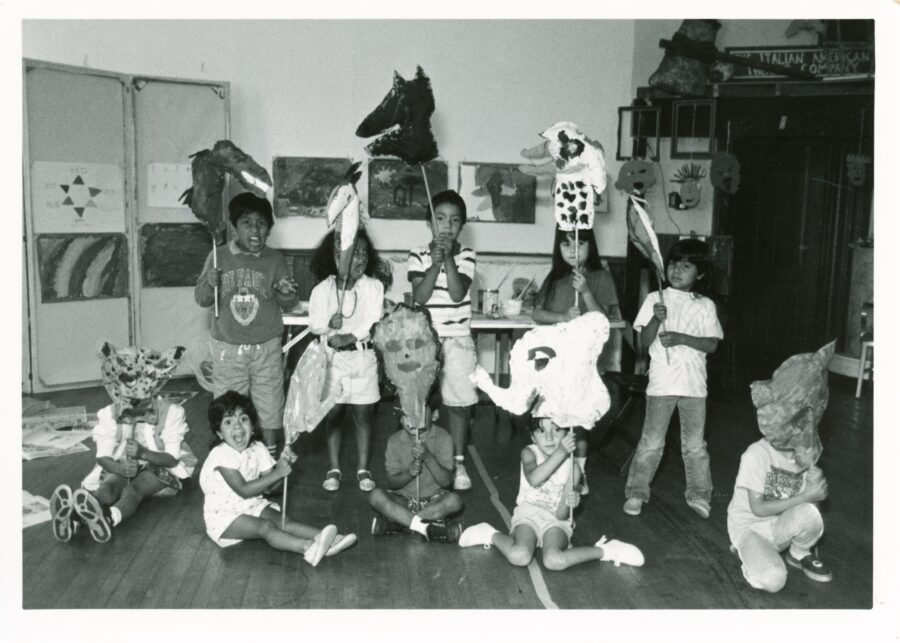

Imagination Doctors Virtual Tour
The Imagination Doctors Virtual Tour will be co-led by UIC Disability Cultural Center Director Margaret Fink, a member of the ProsArts ensemble, and an exhibiting artist. This virtual tour takes the audience through our collaborative exhibition exploring themes of longevity, memory, ephemerality, silliness, and self determination presented in the Pros Arts exhibited archive and the new works it inspired. Throughout the tour, the artists will elaborate on their artwork and the ensemble’s community impact.
ACCESS INFORMATION: This program is free and open to the public. CART (live captions) and ASL will be available on Zoom. We’ll have a camera connecting our virtual audience to the gallery. Descriptions of objects will be integrated into the presentation. For questions and access accommodations, email gallery400engagement@gmail.com.